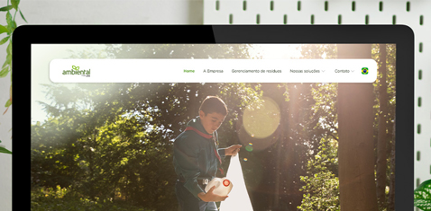

Projetos Selecionados
Uma amostra dos meus melhores textos e estratégias.

SEO / Blog Post
Como otimizar conversões em Landing Pages
Análise aprofundada sobre técnicas de copywriting voltadas para o funil de vendas, focando em palavras-chave de alta intenção.
Ler texto completo
UX Writing / Microcopy
Reformulação de Fluxo de Checkout
Melhoria na experiência do usuário através da simplificação de textos e mensagens de erro, reduzindo o abandono de carrinho em 15%.
Ver estudo de caso
Social Media Strategy
Gestão de Redes: Caso @amismg
Planejamento de conteúdo e redação criativa para engajamento orgânico no Instagram e Facebook.
Ver posts
SEO
Título do seu próximo grande artigo
Aqui você pode descrever o problema que resolveu com seu texto e os resultados alcançados.
Link do arquivo/site